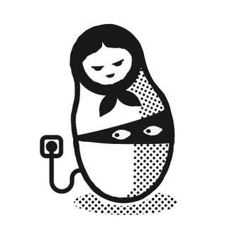

Russian Hackers [chat], HackathonsAndTravel on TGViewer

Russian Hackers [chat]
t.me/HackathonsAndTravel
Чат хакатонщиков из России и СНГ. Мы не имеем ничего общего с кибер-преступниками. Мы создаем новые идеи и ездим вместе на хакатоны
В чате есть традиция: новоприбывшие должны представиться с хештегом #whois в сообщении.
В чате есть традиция: новоприбывшие должны представиться с хештегом #whois в сообщении.